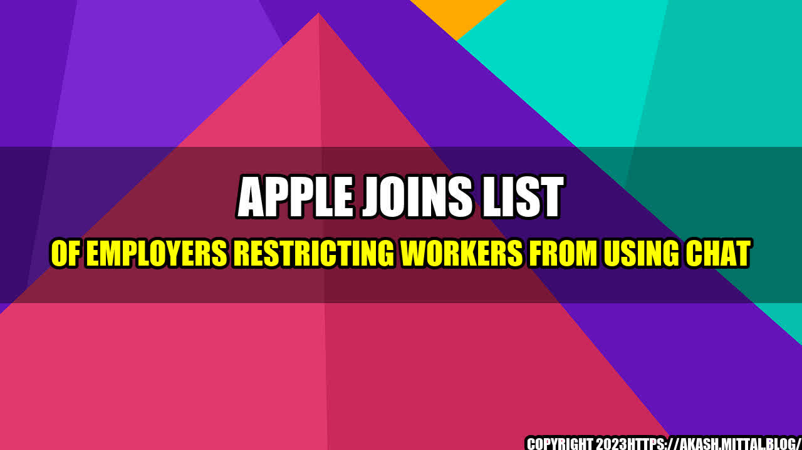

Apple Joins List of Employers Restricting Workers from Using Chat
John had just started his new job at a tech company as a software engineer. His first day was going well until his manager sat him down and informed him that the company had a policy against using any kind of chat application during business hours. John was confused as he had never heard of such a policy before. His manager explained that the company had found that workers were spending too much time chatting with each other and not enough time actually doing their work.
John was taken aback but he decided to follow the policy. Over the next few weeks, he began to notice that he was able to focus more on his work and was getting things done faster. He didn't realize how much time he had been wasting on chat until the company had made this decision.
Apple is the latest company to join the list of employers who are now banning chat applications during business hours. They have found that employees were spending an average of two hours a day on chat, which was taking a toll on productivity. While some workers have complained about the policy, others have found that they are able to focus more on their jobs and get things done faster.
This trend is not limited to just tech companies. A recent study found that employees in a variety of industries were spending an average of 2.5 hours a day on chat applications. Companies are realizing that this is a huge drain on productivity and are taking steps to limit chat usage during business hours.
Examples of Companies Restricting Chat Use
Apple is just the latest in a line of companies that have decided to restrict chat usage. Some other examples include:
- JP Morgan - The investment bank has banned the use of WhatsApp and other chat apps for work purposes.
- UBS - The bank does not allow the use of messaging apps such as WhatsApp, WeChat, or Line for work communication.
- BBC - Employees are not allowed to use WhatsApp and other chat apps during work hours.
- Goldman Sachs - Workers are only allowed to use Symphony, which is a secure messaging app specifically designed for the financial industry.
These companies have found that restricting chat usage has led to increased productivity and better communication between employees. While it may take some time for workers to adjust to these policies, the benefits are clear.
Why Are Companies Restricting Chat Use?
There are a number of reasons why companies are deciding to restrict chat usage:
- Increased Productivity - When workers are spending hours a day on chat, they are not getting their work done. By restricting chat usage, companies are able to increase productivity and get more done.
- Better Communication - While chat can be a useful tool for communication, it can also be a distraction. By limiting the use of chat, companies are encouraging employees to communicate face to face or through other means, which can lead to better communication and collaboration.
- Protecting Company Information - Many chat applications are not secure and can be easily hacked. By restricting chat usage to only secure applications, companies are able to protect their sensitive information.
Conclusion
While some workers may be unhappy with the decision to restrict chat usage, the benefits are clear. Companies are seeing an increase in productivity, better communication, and the protection of sensitive information. As more companies follow this trend, it will be interesting to see how it impacts the workplace and the way we communicate and collaborate with each other.
In conclusion, companies are making this decision to increase productivity and protect company information. It may take some time for workers to adjust, but the benefits are clear. As we continue to see more companies follow this trend, it will be interesting to see how it impacts the workplace and the way we communicate.
Curated by Team Akash.Mittal.Blog
Share on Twitter Share on LinkedIn